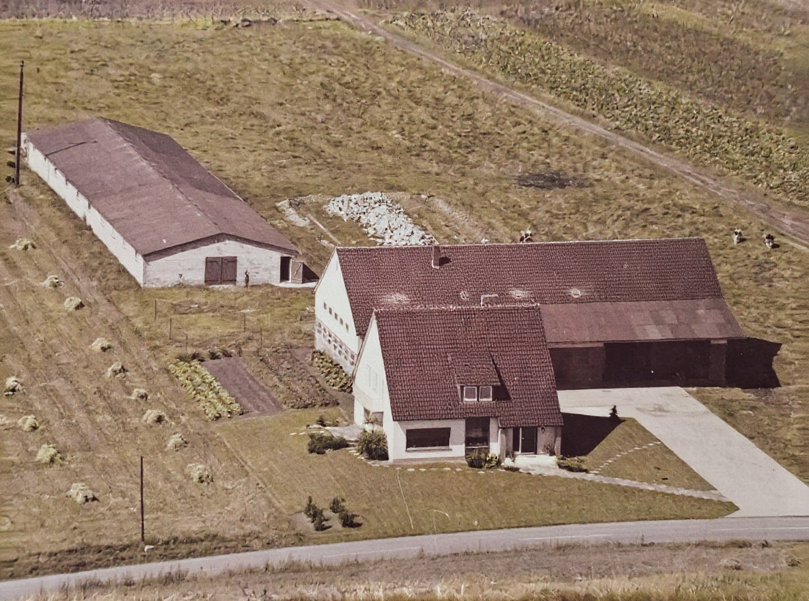
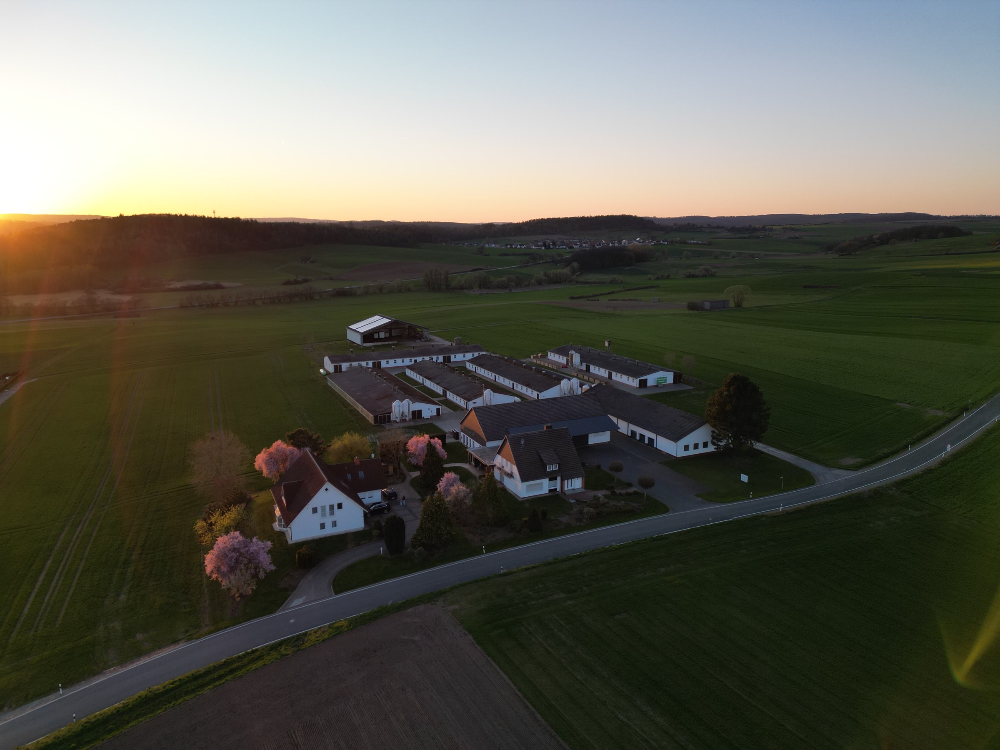
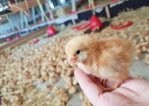
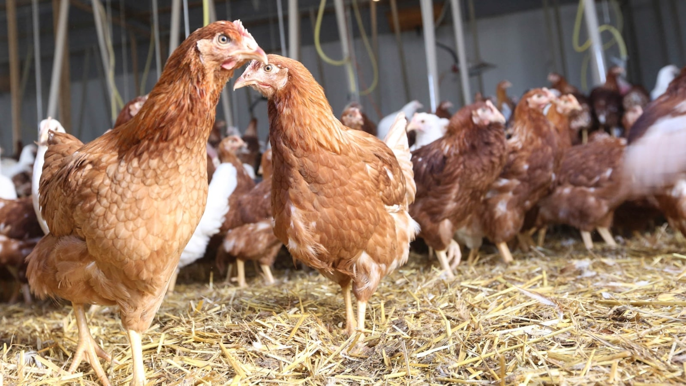
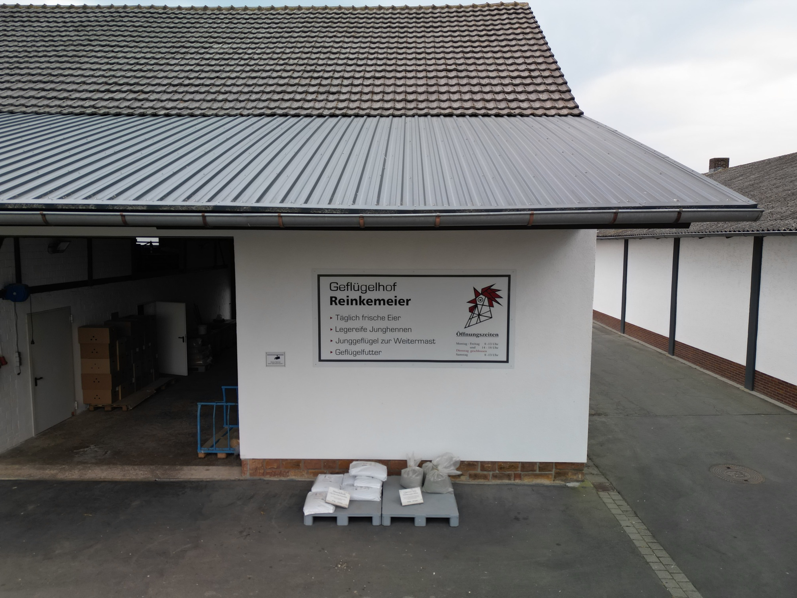

01 · Der Hof
Luftaufnahme heute
Anzefahr. Offener Himmel, paar Ställe, Straße vorbei. Hier läuft das Tagesgeschäft seit drei Generationen.
Reportage-Ton. Links 60er, rechts heute. Text zentriert darunter. Stat-Panel mit 3 Zahlen. Funktioniert weil die Transformation visuell sofort passiert.


Geflügelhof Reinkemeier. Angefangen hat der Betrieb in den 60ern — da stand noch ein einzelner Stall im Feld. Heute läuft hier Jungtier-Aufzucht, Junghennen, frische Eier.
Da bin ich aufgewachsen. Wenn ich grad nicht in der Uni bin oder auf nem Event filme, helf ich hier mit. Nicht weil ich muss, sondern weil's dazugehört.
Alle Bilder in einem asymmetrischen Grid, ein Text-Panel ist selbst eine Kachel. Jedes Bild hat einen Mini-Label. Reiht sich visuell in die „Mein Content"-Bento ein, aber mit eigenen Grid-Proportionen.
Dritte Generation, Landwirtschaft, Handwerk. Das Andere neben Uni und Videos. Der Stoff aus dem ich gemacht bin.

Aufzucht
Bestand
Der LadenIch hab früh gelernt: harte Arbeit geht vor. Kein Spruch. Einfach wie's ist.
Dunkler Hintergrund, cinematic. Full-width Bilder im Wechsel mit Text-Passagen, Drop-Cap am Absatz-Start. Story/Anekdoten-Ton, persönlich. Schluss-Quote als Einrahmung.
Ein paar Tausend Hühner, ein Silo, ein Familien-Name. Das ist nicht glamourös — aber echt.
Der Geflügelhof Reinkemeier läuft in dritter Generation. Opa hat angefangen, Papa hat übernommen, und ich helf mit wenn ich grade da bin. Morgens in den Stall rüber, wenn ich nicht gerade zwischen Vorlesung und Schnittplatz hänge.
Das Tempo ist anders als das auf Instagram. Kein Reel-Algorithmus. Keine Views. Nur Tiere, Arbeit, Jahreszeiten. Gerade deshalb hält's mich geerdet.
Wenn mich jemand fragt warum ich ungefiltert mach, kommt's da her. Ich bin nicht in einer Stadt-WG mit Ringlicht groß geworden, sondern zwischen Eiern und Futtersäcken. Das färbt ab.
„Wer was erreichen will, kommt da nicht drum rum."
Luftbild füllt den Hintergrund (abgedunkelt). Eine helle Content-Card mit Business-Ton schwebt drüber. Rechts ein gestapeltes Polaroid-Deck mit 3 Bildern. Direkt, selbstbewusst, „das ist unser Ding".
Wir züchten legereife Junghennen, verkaufen täglich frische Eier, liefern Junggeflügel zur Weitermast. Nichts davon bekommt man beim Scrollen mit — aber es ist das, was hier jeden Tag passiert.
Ich hab hier gelernt was Arbeit ist. Nicht als Metapher, sondern am Stall um halb sechs.
Horizontal scrollbarer Strip mit 5 großen Karten. Jede Karte Bild + kurze Caption. Nutzer swipet/scrollt durch. Rahmen-Text oben links, Schluss-Text unten. Passt visuell zum Events-Karussell.
Dritte Generation, Geflügelhof Reinkemeier. Kein Content-Set — einfach der Ort, der mich geformt hat.
Anzefahr. Offener Himmel, paar Ställe, Straße vorbei. Hier läuft das Tagesgeschäft seit drei Generationen.
Opa hat in den 60ern angefangen. Ein Stall, paar Tiere, viel Handarbeit. Grundstein für alles was danach kam.
Hauptgeschäft sind legereife Junghennen. Kleiner Anfang, klare Verantwortung — das bleibt hängen.
Strohboden, Licht, Futter. Laut, lebendig, und jeden Tag Routine die keiner im Feed zeigt.
Täglich frische Eier, Junghennen, Geflügelfutter. Mo–Sa geöffnet. Dienstag geschlossen.
Ohne diesen Hof wär ich nicht der Typ der mit der Kamera auf Events steht. Das kommt von hier.